電子回路の作製１
LEDとサーボを制御するスイッチ基盤を製作します。
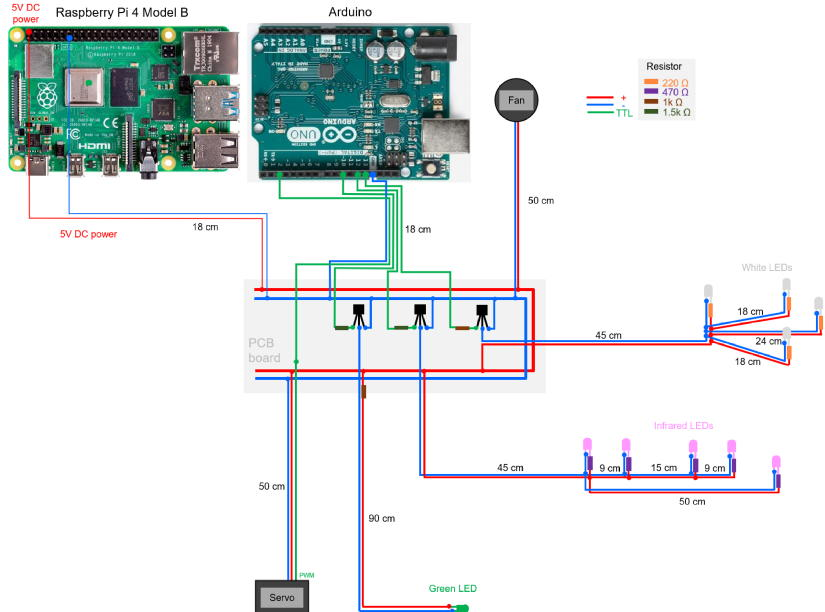
<電子回路の説明>
オペラントハウスの回路の心臓部はRaspberry Piでここで画面の表示、課題のプログラムの実行、カメラ撮影や解析、実験データ記録などが行われます（PCのような物です）。
ただRapsberry Piはサーボなどのパルス信号を作るのには向いていないのでArduinoを介してサーボやLEDを制御する信号（5Vの微弱電流）を生成させます。
微弱電流ではLEDを点灯させられないのでスイッチ基盤にあるﾄﾗﾝｼﾞｽﾀを使って微弱電流を増幅してLEDに送ります。またサーボへの電源もスイッチ基盤から供給されます（スイッチ基盤の電源はRaspberry Piと共有しています）。
ではスイッチ基盤を作りましょう。
なおもしハンダ付けの仕方が分からない場合は下記のサイトを参考にしてください。
https://article.murata.com/ja-jp/article/soldering
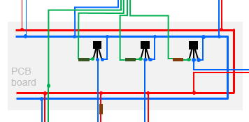
抵抗の基板への取り付け
ハンダとハンダ籠手、プリント基盤（ブレッドボード配置）、1kΩと1.5kΩの抵抗を用意して下さい。
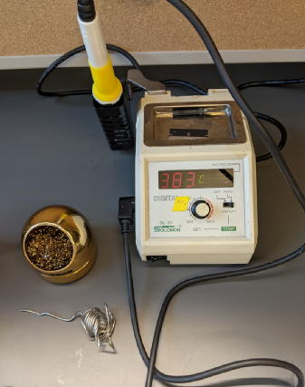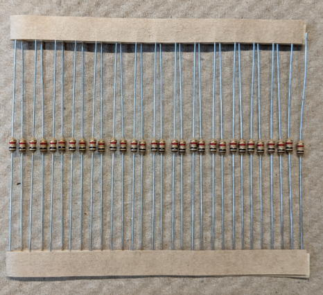
プリント基板の裏面を見て下さい。
金色で繋がっている部分は電気が流れます。
この基盤を使えば最小限の手間で電子回路を作成する事が出来ます。
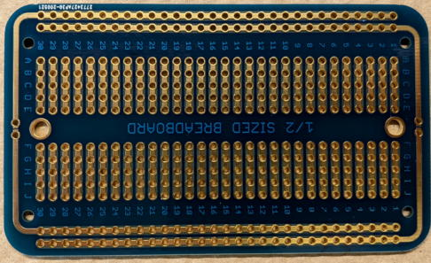
抵抗をこの様にPCB基盤に通してください。
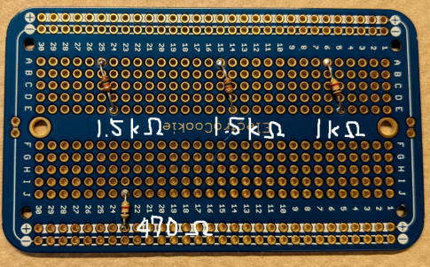
裏面をハンダ付けしてください。
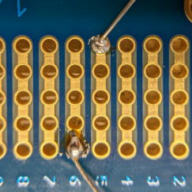
抵抗の余った足はニッパーで切って取り除いて下さい。
※ハンダが隣の回路（ライン）まではみ出ていないか注意！もしはみ出ている場合はニッパーで除去してください。
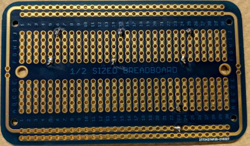
トランジスタの基板への取り付け
Arduinoからは微弱な電流しか流せないのでLEDを複数点灯させるにはこれをトランジスタで増幅する必要があります。
トランジスタの足を差しやすいようにこの様に曲げてください。
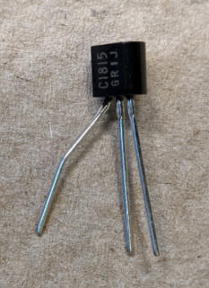
このよう差してハンダ付けしてください。
※ﾄﾗﾝｼﾞｽﾀには向きがあります。注意してください。
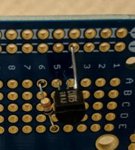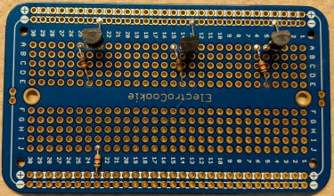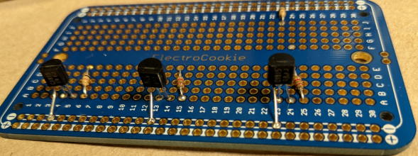
白色LED（天井照明･罰用）の取り付け
天井照明用の白LEDを取り付けましょう。
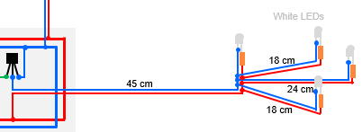
まずは配線を用意します。
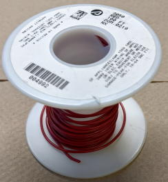
ニッパーの先端でビニール皮膜に傷をつけて皮膜剥く起点を作ります。
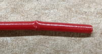
そしてビニル皮膜を剥いて下さい。
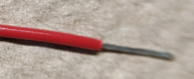
＜ストリッパーを使う場合＞
①1mmの穴に銅線をセット
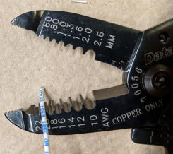
②しっかりと刃を閉じてビニル皮膜を引っ張る
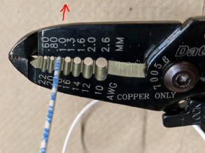
③銅線の中身が残っているかチェック
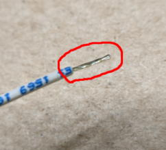
銅線を準備して下さい (18cm x4, 24cm x2, 45cm x2)。
プラス用とマイナス用で色を統一すると便利です。
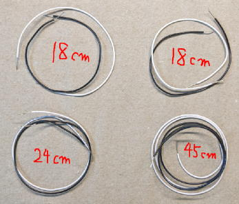
次に点線で囲ったLEDに配線を繋げましょう。
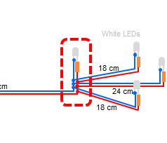
まず白LEDの陽極（足が長い方）に220Ωの抵抗を取り付けます。まずは抵抗とLEDの足を写真の様にねじって、はんだ付けして下さい。
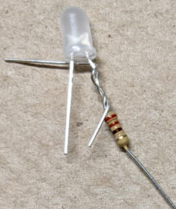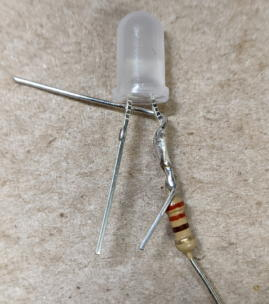
次に他のLEDへ電気を送る銅線を銅線に繋げます。
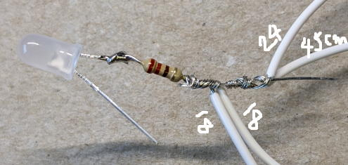
陰極にも同様に銅線を取り付けます。
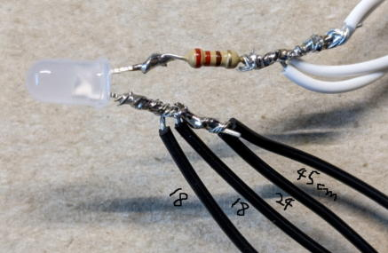
次に陽極と陰極が触れてショートを起こすことを防ぐため熱収縮チューブを取り付けます。
写真の様に5mmの熱収縮チューブを通し、ハンダ籠手の熱で収縮させて密着させてください。
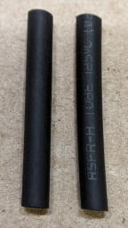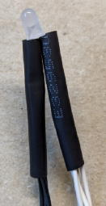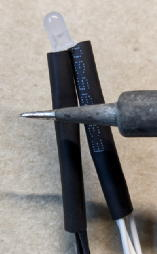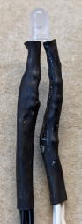
次に残り3つの白LEDをハンダ付けして行きましょう。
まずは写真の様に3mmの熱収縮チューブを通して下さい。
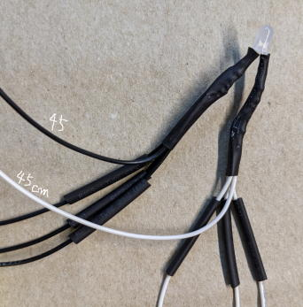
18,24cmの導線の先に220Ωの抵抗を付けた白色LEDを取り付けて、熱収縮チューブを被せて下さい。
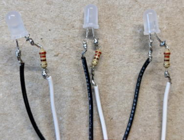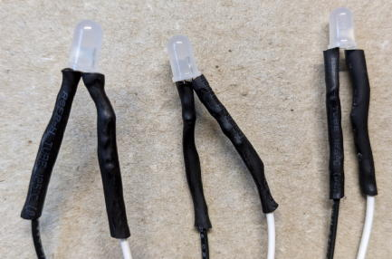
45cmの導線は写真の様に基盤にはんだ付けして下さい。
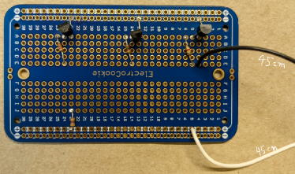
電源の配線
次に電源用の配線を取り付けます。
メスコネクタの付いた18cmのジャンパーワイヤーを2本用意してください。
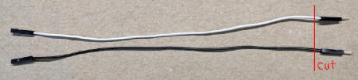
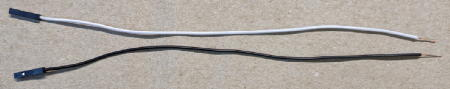
基板にハンダ付けしてください。
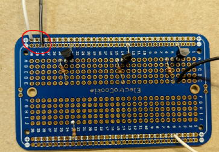
このようになっていれば完成です。
お疲れ様でした。
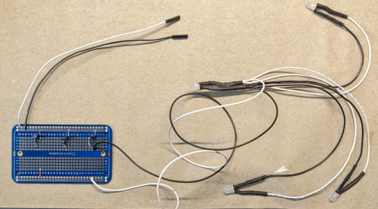